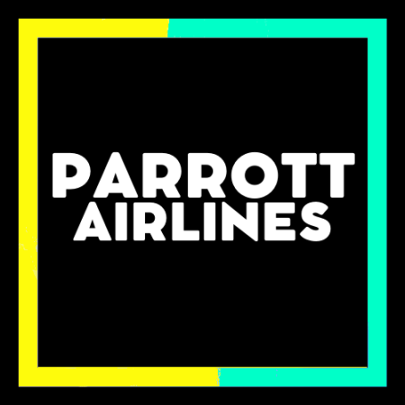

(wiem że to wygląda jak z lat 90-tych ale nieważne potem sie ulepszy lol)
Wymagania odnośnie dołączenia
Tą sekcję zamieszczam na samym początku, tak abyś mógł od razu ocenić czy zakwalifikowałbyś się do naszej linii.
Przede wszystkim wymagany wiek to 0-20 lat. Musisz też wiedzieć że w linii są lub mogą być osoby niepełnoletnie i trzeba ich szanować.
Bardzo ważne są u nas zasady, dlatego ich nieprzestrzeganie grozi po prostu
permanentnym banem (dostępne są one na serwerze Discord PA). Na początku nie potrzebujesz dużego doświadczenia,
w naszej linii wyszkolimy Cię do takiego poziomu, że będziesz spokojnie mógł nazwać się wirtualnym pilotem.
Trochę o linii ;)
Parrott Airlines jest wirtualną polską linią lotniczą.
Operujemy głównie w symulatorze FlightGear, ale jeśli na daną chwile go nie masz możesz latać w innych (jak XPlane albo GeoFS).
Nasze HUB-y są (Polska) w Warszawie i w Krakowie, (za granicą) we Frankfurcie, Amsterdamie i Sydney.
Nasza flota składa się z samolotów z prawie każdej wytwórni, więc nie ma powodów do kłótni np. Boeing - Airbus.
Co w naszej linii jest nietypowego to jej wydziały. Trudno to opisać słowami, po prostu mamy
wydział Parrott Airlines (loty liniowe), Historical (samoloty wycofane z lotów regularnych, zasłużone w dawnych latach),
Military (siły powietrzne) itd. a do tego razem z zespołem Parrott Industries możesz tworzyć bądź ulepszać samoloty do FG,
dlatego z nami nie ma szans na nudę!
Jak dołączyć?
Dbamy o bezpieczeństwo swoje i innych użytkowników dlatego zanim dołączysz, musimy zweryfikować, czy jesteś godny zaufania.
Cała procedura wygląda mniej więcej tak: dołączasz na serwer "Parrotty" gdzie przechodzisz weryfikację.
Potem dołączasz na serwer Parrott Airlines jako rekrut. Po wyszkoleniu dostajesz rolę "Pilot" i możesz pełnoprawnie latać w PA. Zapraszamy!
Kontakt: przez naszego Discorda, gdyby link nie działał proszę pisać do Parrott. ツ#9490 na Discordzie.
Galeria



Screenshot miesiąca (Grudzień 2021)
© Parrott Airlines, Official Parrott Airlines website, Made by Parrott & Parrott Airlines IT team, 2021